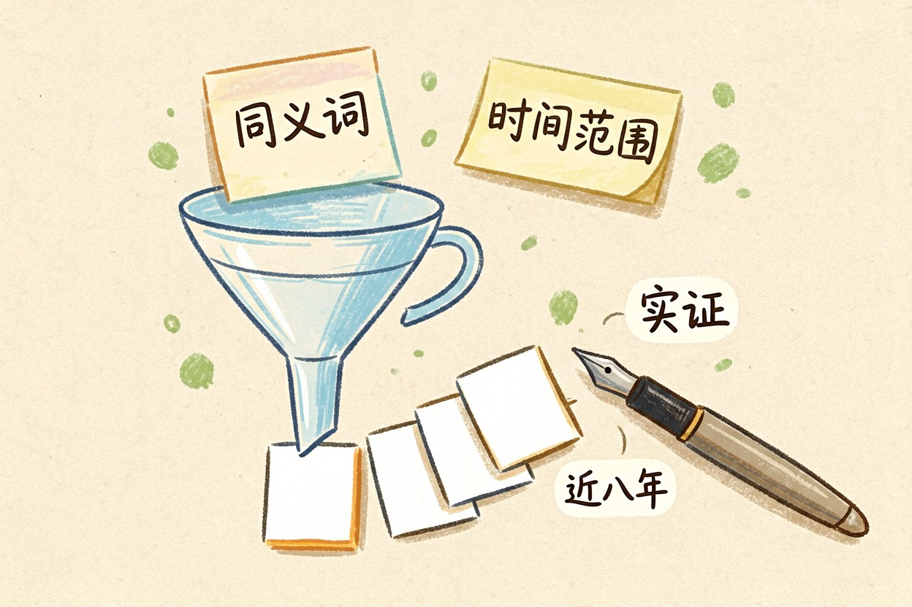
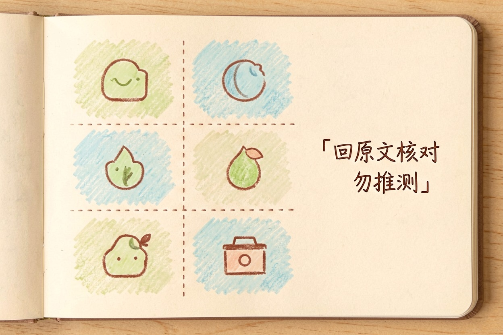
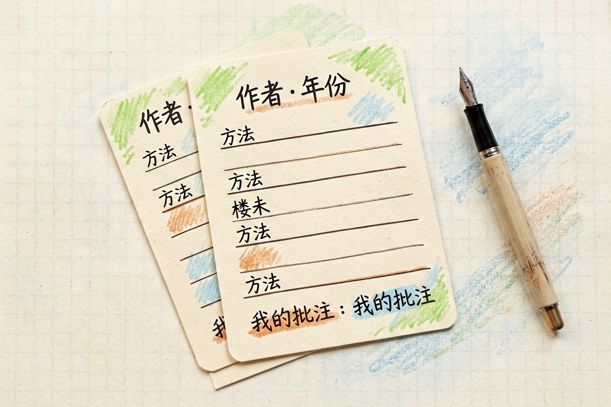

用 AI 整理文献？找、读、记三步的具体做法 — Learntide
把论文丢给模型让它总结，读完还是记不住。真正省时间的是拆解和归档这两步。
ai整理文献：三步各管一件事

ai整理文献这件事，真正能提速的只有三段：找、读、记。三段解决的问题完全不同，混着做就会一团乱。
找，解决的是范围。读，解决的是理解深度。记，解决的是三个月后还能不能调出来。多数人只做了中间那段，让模型总结一篇看一篇，看完照样什么都没留下。
还有个前提得说清楚。模型可以帮你筛、帮你拆、帮你排版，但不能替你判断一篇论文靠不靠谱。这个判断权交出去，后面全盘皆输。
找：先写检索式，再谈筛选

直接问模型「有哪些关于这个主题的论文」，风险很高，它可能给你不存在的标题。稳妥的路子是让它帮你写检索式，你拿去数据库里跑。
告诉它你的研究问题、时间范围、学科领域，让它输出三到五组同义词和上位词的组合。检索式跑出结果后，再把标题和摘要批量喂回去做初筛。
初筛标准要自己定死。比如只要实证研究、样本量写明、近八年发表。标准写进提示词，模型才能按你的尺子量，而不是按它的偏好挑。
读：把一篇论文拆成六个格子

ai读论文的方法，核心是结构化。散着读容易被作者的叙述带走，拆成固定格子就能横向比较。
请按下面六个格子拆解这篇论文，每格不超过 60 字，用原文依据回答。
1 研究问题：作者想回答什么
2 方法：设计、样本、数据来源
3 关键结论：最多 3 条，每条标出对应章节
4 局限：作者自己承认的，和你看出来的分开写
5 与我的关系：能支撑还是反驳我的论点
6 存疑处：数据或推论中你觉得站不住的地方
原文中找不到依据的，直接写「原文未提及」，不要推测。
【粘贴论文正文或章节】第四格和第六格最值钱。多数总结只给结论，不给边界，而综述里真正要写的往往就是这些边界。跑完记得抽两条结论回原文核对，模型改写数字这种事并不罕见。
记：卡片模板决定复用效率
拆完不归档，等于白拆。文献管理用什么ai工具其实是次要问题，模板统一才是关键。
一张卡片固定七个字段：作者与年份、期刊、研究问题、方法、结论、局限、我的批注。字段顺序永远一致，以后做表格对比才拼得起来。
批注那栏必须手写。模型给的是内容摘要，你写的是判断，比如这篇适合放引言还是放讨论。这些卡片沉到你的知识库里，检索时按方法或按结论捞都行，具体入库方式可以参考搭建个人知识库那套流程。
综述的边界与几个提醒
ai文献综述怎么写，答案是让它起草结构，不让它落笔。先自己定好脉络：按时间、按流派还是按方法。脉络定了，再让模型把卡片填进去成段。
引用必须回原文核对，一条都不能省。页码、年份、作者姓名，这三样是幻觉高发区，相关坑点在避免 AI 幻觉那篇里写得更细。
别把模型输出直接贴进正文。也别为了凑数把只读过摘要的文献列进参考文献，答辩时被追问一句就穿帮。工具选型可以从工具导航里挑几款试。说到底，ai整理文献省下的是搬运时间，不是你自己读和判断的那部分。
本文信息核对于 2026-08-08。AI 产品的价格、免费额度与功能变动频繁，实际以各工具官网当前说明为准。